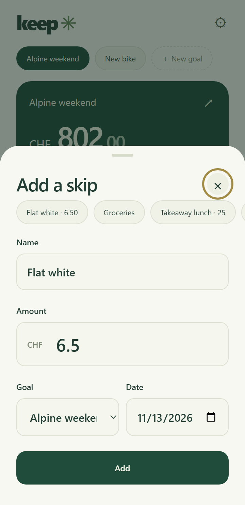
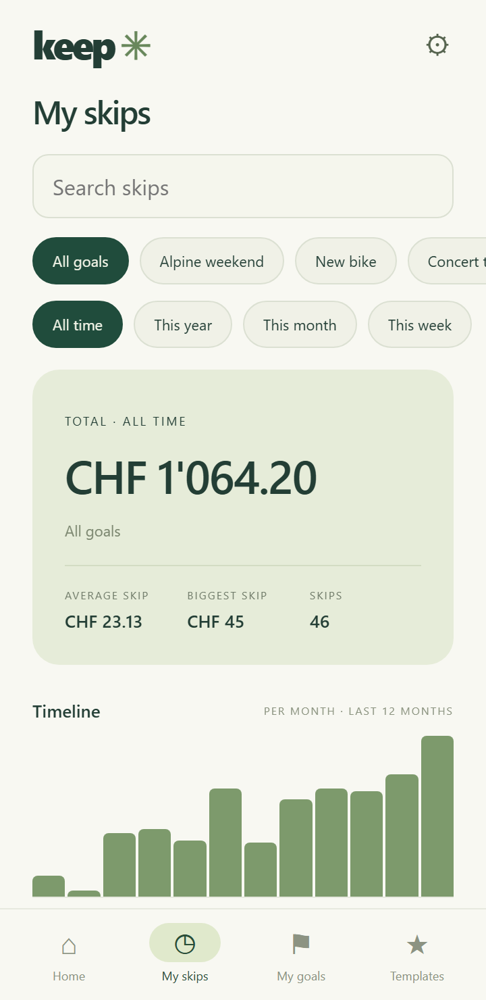
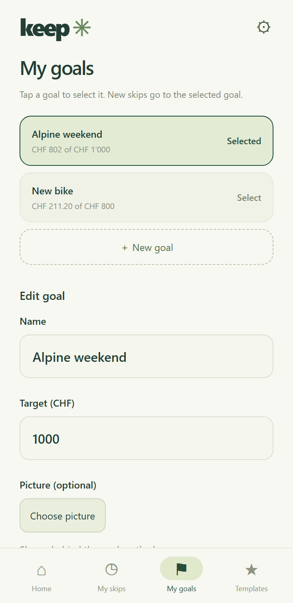
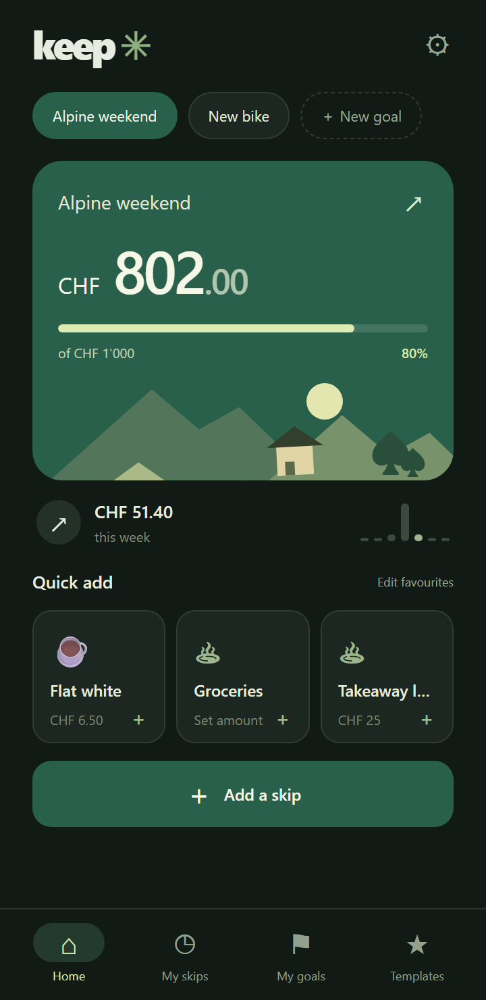

What it looks like




What it does
- Several goalsEach with its own target, progress and optional picture.
- TemplatesSave things you often skip, with or without a fixed amount.
- Three favouritesStar templates to add them from the home screen in two taps.
- StatisticsTotals, averages, a timeline and a breakdown by goal.
- Edit and searchTap any skip to change or delete it; search skips by name.
- Widget and shortcutOn Android: a home-screen widget and a long-press shortcut to add a skip.
- Your settingsLight or dark theme and your own currency.
- Offline and privateNo account, no cloud, no tracking. Nothing leaves the phone.
- BackupExport and restore everything as a file under Settings.
Install on Android
- Open this page on your Android phone and tap Download for Android.
- Open the downloaded keep.apk file.
- If Android asks, allow your browser to install apps, then tap Install.
Widget: long-press the home screen, choose Widgets, then Keep. Shortcut: long-press the Keep icon.
Install on iPhone
- Open this page in Safari on your iPhone and tap Open on iPhone.
- Tap the Share button, then Add to Home Screen.
- Open Keep from the Home Screen. After the first start it works offline.
There is no file to download on iPhone: Keep runs as a web app with its own icon. It updates by itself when you are online.
Updating on Android
This page always offers the newest build. Download it and install it over the old version; your data stays.
If an update refuses to install, the old version was signed differently. Export a backup first (gear icon, Settings, Export backup), uninstall Keep, install the new file and use Restore backup.
Your data
Everything is stored on the device you use. The Android app and the iPhone web app each keep their own data; move between them with Export backup and Restore backup in Settings.